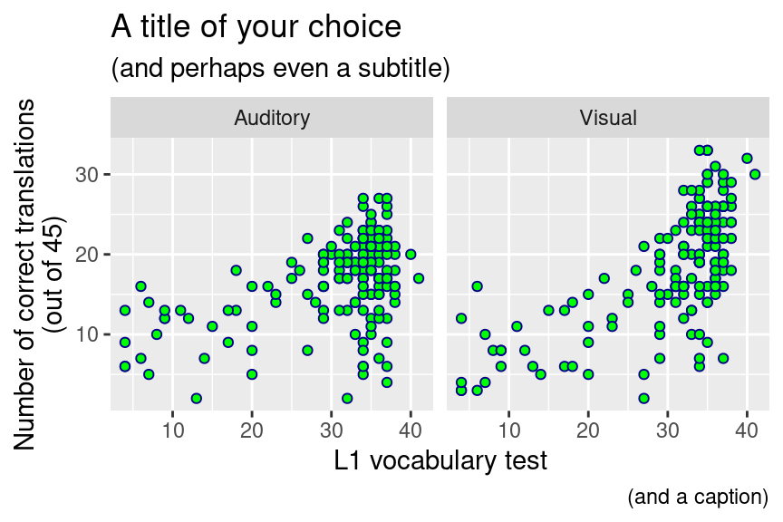

Chapter 7 Week 7: Scatterplots
7.1 Goals
- You’ll learn how to visualise the relationship between two continuous variables in a scatterplot.
- You’ll gain some experience with summarising and manipulating large datasets.
7.2 Summarising datasets
Vanhove (2014) investigated how people’s ability to
recognise written and spoken cognates in a related but
unknown language develops throughout the lifespan and
how it is related to linguistic and cognitive factors.
The dataset Vanhove2014_Translations.csv contains the
raw data of this study. For each of the 163 participants,
this dataset contains 100 entries (one for each cognate),
for a total of 16,300 rows.
Each translation was rated as correct or incorrect.
Additionally, the dataset contains some information
about the participants (e.g., their performance on other
tasks) as well as about the stimuli (e.g., a measure
expressing its formal similarity to its French, German or English cognate).
## Parsed with column specification:
## cols(
## Stimulus = col_character(),
## Subject = col_double(),
## Mode = col_character(),
## Trial = col_double(),
## Translation = col_character(),
## Correct = col_double(),
## Sex = col_character(),
## Age = col_double(),
## NrLang = col_double(),
## DS.Total = col_double(),
## WST.Right = col_double(),
## Raven.Right = col_double(),
## English.Total = col_double(),
## Status = col_character(),
## MinLev = col_double()
## )The variables:
Stimulus: The word to be translated.Subject: The participant’s ID.Mode: Whether the word was presented in its spoken (Auditory) or in its written form (Visual).Trial: The position of the word in the task.Translation: The participant’s translation attempt for the stimulus.Correct: Whether the translation was correct (1) or incorrect (0).SexAgeNrLang: The number of languages the participant spoken.DS.Total: The participant’s score on a working memory task.WST.Right: The participant’s score on a German vocabulary test.Raven.Right: The participant’s score on an intelligence test.English.Total: The participant’s score on an English-language test.Status: Whether the stimulus has a German, English, or French cognates (target) or not (profile).MinLev: The degree of formal discrepancy between the stimulus and its most similar German, English or French cognate. (lower = more similar)
Missing values were labelled NA (not available).
## Stimulus Subject Mode Trial
## Length:16300 Min. : 64 Length:16300 Min. : 1.0
## Class :character 1st Qu.:2909 Class :character 1st Qu.:13.0
## Mode :character Median :5731 Mode :character Median :25.5
## Mean :5317 Mean :25.5
## 3rd Qu.:7794 3rd Qu.:38.0
## Max. :9913 Max. :50.0
##
## Translation Correct Sex Age
## Length:16300 Min. :0.0000 Length:16300 Min. :10.00
## Class :character 1st Qu.:0.0000 Class :character 1st Qu.:16.00
## Mode :character Median :0.0000 Mode :character Median :39.00
## Mean :0.3523 Mean :40.28
## 3rd Qu.:1.0000 3rd Qu.:60.00
## Max. :1.0000 Max. :86.00
##
## NrLang DS.Total WST.Right Raven.Right
## Min. :1.000 Min. : 2.000 Min. : 4.00 Min. : 0.0
## 1st Qu.:2.000 1st Qu.: 5.000 1st Qu.:29.00 1st Qu.:12.0
## Median :3.000 Median : 6.000 Median :34.00 Median :19.0
## Mean :3.067 Mean : 6.374 Mean :30.24 Mean :17.8
## 3rd Qu.:4.000 3rd Qu.: 8.000 3rd Qu.:36.00 3rd Qu.:24.0
## Max. :9.000 Max. :12.000 Max. :41.00 Max. :35.0
## NA's :100
## English.Total Status MinLev
## Min. : 3.00 Length:16300 Min. :0.0000
## 1st Qu.:20.75 Class :character 1st Qu.:0.2857
## Median :31.00 Mode :character Median :0.4000
## Mean :28.30 Mean :0.4566
## 3rd Qu.:37.00 3rd Qu.:0.6062
## Max. :44.00 Max. :1.0000
## NA's :300In order to be able to sensibly visualise these data, we need to first transform this dataset. If we’re interested in the relationship between the participants’ age, sex, and linguistic and cognitive test results on the one hand and their translation performance on the other hand, it seems useful to first compute the number of correct translations for spoken and written words per participant. There are a couple of ways you could do this in R; I find the method outlined below the most transparent one.
Let’s start with a simple example. We’ll first compute the total number of correct responses in the entire dataset. The comments show you how you can read the R code out loud.
# 1st attempt: Total number of correct answers
# Take object 'd' (our dataset), and then
d %>%
# summarise it as follows:
# - compute the sum of 'Correct' and call this sum 'number_correct'
summarise(number_correct = sum(Correct))## # A tibble: 1 x 1
## number_correct
## <dbl>
## 1 5743The result is shown in the console. We can also
save it as a separate object so that we can
work with it later. Here I save it as an object
called overall_accuracy:
(To type the symbol combination %>% (known as the pipe; read out loud as ‘and then’), you can also use the shortcut ctrl + shift + m.)
The total number of correct answers in the entire dataset isn’t too useful to us: we need the number of correct answers per participant.
# 2nd attempt: Number of correct answers per participant
# Create new object 'per_part' as follows:
# take 'd', and then...
per_part <- d %>%
# group it by Subject, and then...
group_by(Subject) %>%
# compute the sum of Correct within each group
summarise(number_correct = sum(Correct))## `summarise()` ungrouping output (override with `.groups` argument)## # A tibble: 163 x 2
## Subject number_correct
## <dbl> <dbl>
## 1 64 49
## 2 78 39
## 3 134 36
## 4 230 38
## 5 288 21
## 6 326 45
## 7 447 47
## 8 527 24
## 9 545 33
## 10 550 46
## # … with 153 more rowsNow we have the total number of correct translations per participant, but this figure contains both the responses to written and to spoken words. It’d be more useful to split this figure up by modality:
# 3rd attempt: Number of correct translations per participant,
# split up by modality.
per_part2 <- d %>%
# group by Subject and Mode
group_by(Subject, Mode) %>%
summarise(number_correct = sum(Correct))## `summarise()` regrouping output by 'Subject' (override with `.groups` argument)## # A tibble: 326 x 3
## # Groups: Subject [163]
## Subject Mode number_correct
## <dbl> <chr> <dbl>
## 1 64 Auditory 24
## 2 64 Visual 25
## 3 78 Auditory 19
## 4 78 Visual 20
## 5 134 Auditory 24
## 6 134 Visual 12
## 7 230 Auditory 12
## 8 230 Visual 26
## 9 288 Auditory 12
## 10 288 Visual 9
## # … with 316 more rowsOur goal is to visualise the relationship between variables such as IQ, age, and L1 vocabulary skills on the one hand and the participants’ translation performance on the other hand. To do this, we need to add these variable to the summary. Again, there are several ways to do this; here’s one.
# 4th attempt: Like above, but adding Age, etc.
# Create a new object with participant-related information.
# Take 'd', and then...
part_info <- d %>%
# Select the following columns
select(Subject, Age, Sex, WST.Right,
Raven.Right, English.Total,
NrLang, DS.Total)Like d, part_info consists of 16,300 rows.
But each row is repeated 100 times.
Using distinct(), the duplicates are deleted:
Now we can add the information from part_info to per_part2:
# Create new object 'per_part3'.
# Take object 'per_part2', and then...
per_part3 <- per_part2 %>%
# join it with 'part_info' using 'Subject' as the "zipper"
full_join(part_info, by = "Subject")
# Show result
per_part3## # A tibble: 326 x 10
## # Groups: Subject [163]
## Subject Mode number_correct Age Sex WST.Right Raven.Right English.Total
## <dbl> <chr> <dbl> <dbl> <chr> <dbl> <dbl> <dbl>
## 1 64 Audi… 24 27 fema… 34 28 42
## 2 64 Visu… 25 27 fema… 34 28 42
## 3 78 Audi… 19 47 fema… 33 26 27
## 4 78 Visu… 20 47 fema… 33 26 27
## 5 134 Audi… 24 33 male 32 24 24
## 6 134 Visu… 12 33 male 32 24 24
## 7 230 Audi… 12 84 male 37 20 31
## 8 230 Visu… 26 84 male 37 20 31
## 9 288 Audi… 12 28 male 35 24 39
## 10 288 Visu… 9 28 male 35 24 39
## # … with 316 more rows, and 2 more variables: NrLang <dbl>, DS.Total <dbl>One final problem remains: The number of correct answers
includes responses to both cognates and to non-cognates.
We’re only interested in the responses to cognates, however.
Using filter(), we only retain the responses that are of interest:
# 5th attempt: Like above, but only consider target stimuli.
per_part <- d %>%
# only consider target stimuli
filter(Status == "target") %>%
# group by Subject and Mode
group_by(Subject, Mode) %>%
# Compute sum of Correct
summarise(number_correct = sum(Correct)) %>%
# Add the information from part_info using Subject as the "zipper"
full_join(part_info, by = "Subject")## `summarise()` regrouping output by 'Subject' (override with `.groups` argument)## # A tibble: 326 x 10
## # Groups: Subject [163]
## Subject Mode number_correct Age Sex WST.Right Raven.Right English.Total
## <dbl> <chr> <dbl> <dbl> <chr> <dbl> <dbl> <dbl>
## 1 64 Audi… 23 27 fema… 34 28 42
## 2 64 Visu… 25 27 fema… 34 28 42
## 3 78 Audi… 19 47 fema… 33 26 27
## 4 78 Visu… 20 47 fema… 33 26 27
## 5 134 Audi… 24 33 male 32 24 24
## 6 134 Visu… 12 33 male 32 24 24
## 7 230 Audi… 12 84 male 37 20 31
## 8 230 Visu… 26 84 male 37 20 31
## 9 288 Audi… 12 28 male 35 24 39
## 10 288 Visu… 9 28 male 35 24 39
## # … with 316 more rows, and 2 more variables: NrLang <dbl>, DS.Total <dbl>7.3 Scatterplots
To investigate the relationhip between, say, WST.Right and number_correct,
we can plot these data in a scatterplot. While we’re at it, we can split up
this graph into two panels: one for written words, and one for spoken words.
ggplot(dat = per_part,
aes(x = WST.Right,
y = number_correct)) +
# Incidentally, you can specify the shape and colour of the points yourself.
geom_point(shape = 21, colour = "darkblue", fill = "green") +
# Type in "colours()" to see which colour names are recognised by R.
# Type in ?pch to see which 'shape' values are accepted.
xlab("L1 vocabulary test") +
ylab("Number of correct translations\n(out of 45)") +
facet_grid(. ~ Mode) +
labs(title = "A title of your choice",
subtitle = "(and perhaps even a subtitle)",
caption = "(and a caption)")## Warning: Removed 2 rows containing missing values (geom_point).
(The warning concerns two missing values in the WST variable.)
As we’ll discuss in class, scatterplots are the indispensable first (and sometimes final) step when analysing the relationship between two continuous variables.
As for the decision which variable to put along which axis. By and large, put the variable that is most likely to be the cause of the relationship along the x axis and the variable that is most likely to be the effect along the y axis. In this case, it seems more likely that L1 skills affect one’s ability to recognise cognates in a foreign language than vice versa. Hence, put the variable representing L1 skills along the x axis.
7.4 Exercise
Draw a scatterplot that shows the relationship between the participants’ score on the English-language test and the number of correct translations. How many participants’ data are shown?
Hand in both the graph and the compiled HTML report. Mention the number of participants whose data are shown in the R code.
References
Vanhove, Jan. 2014. Receptive multilingualism across the lifespan: Cognitive and linguistic factors in cognate guessing. University of Fribourg PhD thesis. http://doc.rero.ch/record/210293.